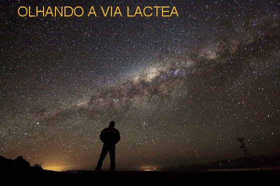

INVENÇÃO DE DEUS
OS PROGRESSOS NA VIDA

É construtivo compreender que
cabe a cada pessoa saber estimular os dons e as virtudes que o SENHOR ornou o
seu espírito, de modo a aplicá-los vigorosamente no seu quotidiano, alcançando o
proveito do conhecimento, objetivando aperfeiçoá-lo, a fim de ter maior êxito
nos seus empreendimentos e trabalhos de cada dia. Só assim terá meios de evoluir
e abrir a mente ao avanço tecnológico. O progresso será o reflexo imediato das
vitórias e conquistas que forem alcançadas no trabalho dedicado e eficiente.
Este procedimento faz parte e deve ser inerente a toda pessoa que busca
consolidar o caminho da sua existência, não se esquecendo de buscar o equilíbrio
psíquico, que é essencial para uma vida em plenitude.
EQUILÍBRIO UNIVERSAL
Os Planetas existem em quantidade
admirável, cada um com sua órbita, dentro dos seus “Sistemas Planetários”,
situados nos milhares de galáxias, e com suas funções específicas. O Céu cobre
toda a imensidão do espaço sideral, dilatando-se infinitamente e cobrindo todos
os astros, pelo incomensurável espaço Divino. Os astros, as constelações, as
galáxias, as estrelas e os planetas, constituem o campo da humanidade. O Céu
pertence aos bem-aventurados, para todos aqueles que cumpriram dignamente o
programa e o ideal da sua vida com honra e fidelidade, e que se preocuparam,
sobretudo, em estabelecer uma base de conhecimento e de bom relacionamento com o
SENHOR DEUS, necessária a edificação de um profundo e sólido elo amoroso, que
proporcionará alegria ao coração e desmedida felicidade ao espírito,
permitindo-lhe rezar com o salmista:
“Ó SENHOR, de
coração eu Vos dou graças, porque ouvistes as palavras dos meus lábios! Perante
os Vossos Anjos vou cantar emocionado, e diante do Vosso Templo vou
prostrar-me”.
CAMINHADA EXISTENCIAL
Todos estes fatos que ilustram o
nosso conhecimento e nos infundem imenso júbilo, também nos lembra, que nascemos
para a vida e existimos neste encantador mundo de DEUS pela Vontade DELE. O
SENHOR nos inventou, permitindo que nascêssemos e nos dá continuamente, a oportunidade
de crescer, de estudar, de trabalhar e desenvolver os conhecimentos, ensejando-nos
a ocasião de construirmos e promovermos o “bem”, direcionando os nossos passos
no caminho do direito, da justiça e do amor fraterno, exatamente na vereda que ELE
deseja que trilhássemos, com objetivo de sermos vencedores, de ganharmos a coroa
Divina da vitória, construindo o nosso cantinho no Paraíso de DEUS, pela magnânima
e infinita bondade do SENHOR.
E como um maravilhoso presente
que enriquece a nossa vida, todas as pessoas que procuram viver com fidelidade
os Mandamentos Divinos se tornam um “amigo de DEUS” , e, portanto,
perfeitamente habilitados a sentir e
a perceber a intervenção Divina no seu quotidiano, na sua própria existência,
auxiliando, inspirando principalmente nos momentos mais difíceis, proporcionando
a inestimável ajuda auxiliadora e necessária. Nestas oportunidades, o SENHOR com
indizível suavidade e doçura, derrama as suas preciosas graças inundando de
júbilo os corações tristes, oprimidos e magoados, consolando e dando soluções
aos problemas, concedendo a certeza da sua presença através daqueles
maravilhosos e benéficos dons e virtudes, que produzem visivelmente na pessoa, o
sorriso da vitória que acontece, e uma alegre e espontânea manifestação que
traduz o sucesso e o bom êxito alcançado pela graça Divina.
RESPOSTA DE UMA VIDA
Certo dia, NOSSO SENHOR
caminhando com seus Discípulos chegou ao Território de Cesaréia, depois de
passar pelo Monte Carmelo, e lhes perguntou:
“Quem dizem as
pessoas ser o FILHO DO HOMEM?” (Mt 16,13)
Os Discípulos responderam:
“Uns afirmam
que é João Batista; outros dizem que é Elias; outros, ainda dizem que é Jeremias
ou um dos Profetas”.
Então JESUS lhes perguntou:
“E vós, quem
dizeis que EU Sou?”
No silêncio da região, aquela
pergunta se propagou vertiginosamente no espaço e deixou os Discípulos meio
confusos e inseguros, se preocupando mais em dar a resposta dos outros, do que
propriamente a resposta do seu pensamento.
Considerando que a Sagrada
Escritura deve ser utilizada para a reflexão e o exemplo a ser seguido, se
meditarmos sobre este acontecimento, não será difícil sentir bem lá no
fundo do coração que JESUS está fazendo esta pergunta no presente, na
atualidade, naquela época aos Discípulos, e então, Simão Pedro entendendo o
sentido do questionamento, e iluminado pela luz da sua fé e de tantos Ensinamentos
e Milagres que presenciou, abriu o coração e num ímpeto de amor, pronunciou:
“SENHOR, Tu és
o Messias, o FILHO DO DEUS Vivo”. (Mt 16,
16)
Em outras palavras: Pedro
reconhece JESUS como o Messias, o SENHOR esperado, o FILHO do DEUS ETERNO que
veio para socorrer e ajudar todas as pessoas, e quer dos seus filhos, o amor,
a certeza e o conhecimento da Sua Pessoa Divina.
E desse modo, como os
ensinamentos e as palavras do SENHOR são eternos, a pergunta de JESUS também
está sendo dirigida no presente, a cada um de nós!
E nós, como vamos responder ao
SENHOR? Com a mesma experiência da revelação Divina? Sim, por que saber quem é
JESUS é saber segui-lo e testemunhar conscientemente a sua ação na nossa vida, e
também, na vida dos nossos irmãos. Isto porque, só experimentamos a bondade de
DEUS sendo bondoso com os outros; experimentamos a misericórdia do SENHOR na
medida em que também nós praticamos a misericórdia; experimentamos o carinhoso e
envolvente Amor Divino no amor que buscamos viver ao longo de cada dia. E deste
mesmo modo, com o coração incendiado de amor, nossa atenção e carinhos se
manifestam nas orações e nos sacramentos que recebemos, conscientes de que é
assim que DEUS se revela em nossa vida, corrigindo as nossas fraquezas, nos
purificando e nos ajudando nas necessidades, porque na verdade, tudo o que
fazemos é “dom de DEUS”
, e não mero resultado de nosso
esforço pessoal. Assim deve ser o nosso entendimento e a nossa vida.
ESCLARECIMENTO SOBRE
NOSSA CRIAÇÃO
 Existem pessoas que não entendem corretamente a semelhança que DEUS NOSSO SENHOR
estabeleceu entre nós e a Pessoa DELE. No Livro dos Gênesis na Sagrada Escritura
está escrito: “DEUS criou
o homem à Sua Imagem, à Imagem de DEUS ELE o criou, homem e mulher ELE os criou”.
(Gn 1, 27)
Existem pessoas que não entendem corretamente a semelhança que DEUS NOSSO SENHOR
estabeleceu entre nós e a Pessoa DELE. No Livro dos Gênesis na Sagrada Escritura
está escrito: “DEUS criou
o homem à Sua Imagem, à Imagem de DEUS ELE o criou, homem e mulher ELE os criou”.
(Gn 1, 27)
A palavra
“Imagem”
tem proposto ao raciocínio de algumas pessoas, a
idéia como se fosse de fato uma elaboração
“igual”, como por exemplo, a realidade que acontece normalmente nas famílias:
“a semelhança que existe
entre um pai e os seus filhos”. Mas,
o que o SENHOR afirmou, é a existência de uma “semelhança geral”
quanto à natureza:
“inteligência, vontade, poder”,
mostrando que o homem (ou mulher) é uma “pessoa”,
e como tal, poderá
“participar da graça Divina”, desde que
exercite e manifeste em todas ocasiões, ou diariamente, os dons que recebeu de
DEUS no dia do seu nascimento e ao longo da sua existência, pelas graças e
virtudes que o SENHOR derramou e derrama em nossa vida, essencialmente por Sua
Infinita e Amorosa Bondade.
E tanto é assim, que no mesmo
Livro do Gênesis, no versículo 26, está escrito:
“Façamos o homem à Nossa Imagem,
como Nossa Semelhança, e que ele domine sobre os peixes do mar, as aves do céu,
os animais domésticos, todas as feras e todos os répteis que rastejam sobre a
terra”. (Gn 1, 26)
Então, o SENHOR nos faz
compreender que fez o homem e a mulher
“numa imagem semelhante”
a ELE, e para que existisse a semelhança, ELE nos
deu uma alma para o corpo, excluindo desse modo, um
“possível pensamento humano sobre a
paridade”, isto é, eliminando algum
equívoco que favoreça entender que a humanidade seja fisionomicamente
“igual”
a DEUS. Não, não é assim. As famílias se formam e se
pode ver nos filhos de cada uma, a semelhança que existe com a face dos pais. Quanto à
natureza humana com sua
“inteligência, vontade, poder” faz
lembrar certa semelhança com a Natureza do CRIADOR. E na verdade, o que imprime
esta semelhança no ser humano é a “alma”,
que é "invenção
Divina"
e que dá vida ao ser criado, sendo revestida com muitos dons e virtudes pelo
SENHOR, antes de infundi-la no corpo humano, fazendo que o homem (ou mulher)
seja uma “pessoa
semelhante a ELE” , e como tal, apta a
“participar da graça
Divina”, pela Bondade Infinita do
CRIADOR.
A ALMA
Ao nascer, toda criança recebe do
SENHOR DEUS uma Alma que lhe “dá a vida”.
Assim, a Alma é a responsável pela existência de cada ser, tanto na vida como na
morte. Então, fica evidente que as coisas que fazem parte do Corpo humano, como
por exemplo: os órgãos, carne, ossos e músculos, simplesmente constituem a
“veste”
da Alma.
Como complemento desta realidade
acontece um fenômeno sobrenatural: a face da Alma assume os traços da fisionomia
humana. Significa dizer, que a face do Espírito se torna a mesma face do Corpo
que o “veste”.
Desse modo, Corpo e Alma, são
duas partes inseparáveis de cada ser humano e ninguém existe sem elas, muito
embora, individualmente elas tenham origens diferentes: a Alma é invenção
Divina, e vem de DEUS e portanto, é a parte mais digna de
cada pessoa. O Corpo nasce do relacionamento amoroso de nossos pais,
e constitui o invólucro da Alma.
portanto, é a parte mais digna de
cada pessoa. O Corpo nasce do relacionamento amoroso de nossos pais,
e constitui o invólucro da Alma.
Todavia, Corpo e Alma se unem de
tal modo singular, que formam uma união justa, perfeita e indissolúvel, enquanto
existe vida.
Por isso mesmo, na missão do
quotidiano, os cuidados no viver de cada pessoa, devem estar orientados em dois
pontos básicos: atender em igualdade de condições as necessidades do Corpo e as
necessidades da Alma.
Atendemos as necessidades do
Corpo, todas as vezes que o cuidamos com uma alimentação adequada e sadia, com
exercícios convenientes a cada idade, com o repouso reparador das energias, e
todas as providências que protejam o Corpo no calor e no frio, sem excessos e
com os evidentes cuidados.
Atendemos as necessidades da
Alma, empenhando com seriedade nas orações de cada dia, na frequência a Santa
Missa e aos Sacramentos, no exercício da caridade, da fraternidade e da piedade
cristã, mantendo nossa Alma sempre unida a DEUS, que é o seu CRIADOR e o
“seu alimento espiritual”
de todos os dias.
Isto porque, se atendermos
somente as necessidades do Corpo vamos "atrofiar"
a Alma, pois tendo duas partes vitais (Corpo e Alma), só acionamos uma delas: o
Corpo. Assim, mesmo que aparentemente tenhamos progressos financeiros e tenhamos
muitos bens materiais, a existência será anormal, nossa vida estará incompleta.
Da mesma forma que o Corpo não
vive sem o alimento material, a Alma
"não vive"
sem o alimento espiritual (orações, boas obras,
etc.), ou seja, a Alma não têm
"vida em plenitude",
por que não tem o primordial alimento que é a presença de DEUS. Ela apenas
existe... E Alma "sem
vida", é o mesmo que um Corpo com um
membro atrofiado. Ele
"apenas existe", mas não funciona.
Uma pessoa que procura viver
dentro da normalidade, se preocupando com as realidades do seu Corpo e da sua
Alma, com certeza estará se conduzindo dentro dos melhores parâmetros, e por
isso mesmo, poderá ter os seus aborrecimentos e tristezas no quotidiano, como
condição normal a existência de todos nós. Mas nas dificuldades, ela sempre terá
a Luz de DEUS, a iluminar os seus passos, a fim de inspirar e dar soluções aos
seus problemas. E assim acontecendo, sem a menor dúvida, será uma criatura
equilibrada e uma pessoa feliz.
Por outro lado, a Alma assumindo
as feições do Corpo que a reveste, ela se integra perfeitamente nele, e desse
modo, todas as sensações, alegrias e prazeres que o Corpo sentir, serão sentidos
por ela, no mesmo instante e com o mesmo fervor. Da mesma maneira, Alma e
Corpo se mantendo completamente unidos, todas as tristezas e decepções que
existirem, e também, todos os maus exemplos que forem cultivados por aquele a
quem ela dá a vida, eles, o Corpo e a Alma daquela pessoa, assumem juntos toda a
responsabilidade e por isso mesmo sofrerão as dificuldades causadas pelas
fraquezas e ambições do próprio Corpo. Corpo e Alma permanecerão unidos em tudo,
enquanto existir a vida.
Concluído o tempo da vida
terrestre, seja pelo término da missão existencial ou por algum acontecimento
que limite os dias da pessoa humana, conforme a Vontade de DEUS, acontece o
óbito. Após a morte física, a Alma abandona o Corpo que permanece inerte e será
sepultado ou cremado, enquanto ela, na companhia do seu Anjo da Guarda,
caminhará definitivamente para a eternidade.

 PRÓXIMA PÁGINA
PRÓXIMA PÁGINA
PÁGINA ANTERIOR
RETORNA AO ÍNDICE